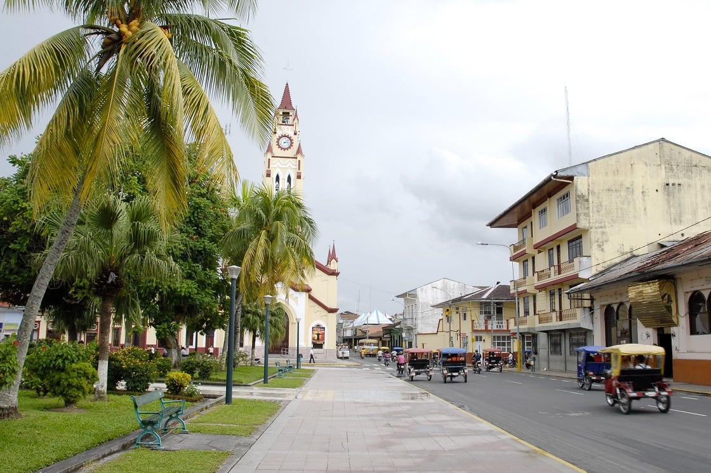
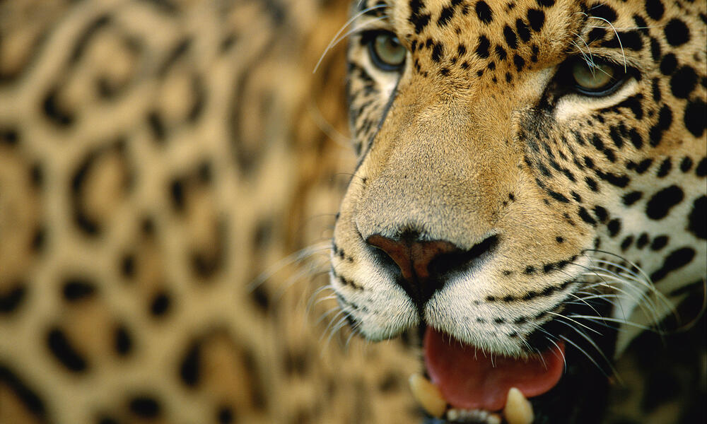

Five Best Places To Visit The Amazon Jungle To See Wildlife
1.Jau National Park (Brazil)
One of the biggest national parks in Amazonia at more than 5.6 million
acres, Jau protects the entirety of the Rio Jau watershed, its borders
running north to the Unini and Paunini rivers and south to the
Caribinani River, and including the Jau’s confluence with the mighty Rio
Negro (the blackwater river serving as one of the Amazon’s greatest
tributaries). Established in 1980, Jau is now part of the UNESCO World
Heritage Site of the enormous Central Amazon Conservation Complex,
bigger than Switzerland and considered the world’s largest expanse of
protected tropical rainforest. Jau National Park’s mosaic of caminarana
upland forest and scrub, terra firme rainforest, and extensive igapó
flooded blackwater forest supports an impressive diversity of wildlife.
The roster’s made up of some 120 mammal species, 455 birds, 150
reptiles, and more than 280 kinds of fish.Those who visit the park by
boat (the only way to access it) can keep their eyes peeled for
Amazonian manatees, pink river dolphins, giant otters, and no fewer than
four species of caimans (including the great black caiman) in the flow.
Bush and short-eared dogs, jaguars, giant anteaters, giant armadillos,
and other terrestrial mammals reside here, while the canopy shakes and
rustles with rare primates such as the white-bellied spider monkey and
the golden-backed black uakari, rubbing shoulders with Amazon parrots
and the kingly harpy eagle. Jau’s about 125 miles northwest of Manaus,
the main jumping-off point for river cruises to the park and host to
such hotels and lodges as Juna Opera, Amazon Ecopark, and Anavilhanas
Jungle Lodge.
2.Manu National Park (Peru)
Located in the Amazon of southeastern Peru, the Manu National Park is a
designated UNESCO World Heritage Site. This park, also called the Manu
Biosphere Reserve, is chock full of amazing wildlife, including giant
otters, wattled jacanas, jaguars, and various monkeys. It is also home
to some 20,000 plant species, including significant water lilies. If
you’re a birdwatcher, this is the place to be to admire tanagers,
macaws, and toucans. You may also encounter a hoatzin, an odd bird
unique to the Amazon.

3.Plaza de Armas de Iquitos
Explore what it feels like to be enveloped in a jungle canopy at the
Pacaya Samiria National Reserve in Peru. Wildlife lives in the tops of
the trees here, and you’ll be able to get a closer look at them. If
you’re feeling particularly brave or looking to experience an extra
thrill, make your way across the La Posado canopy bridge for a
spectacular view of this diverse ecosystem.
4. Tambopata National Reserve
For a study in the plant life of Amazonia, head to the Tambopata
National Reserve inside Peru. Here you’ll stand in awe of the 50-meter
tall Ceiba tree, the 40-meter-high Brazil Nut tree, and the ironwood
trees that are 500 years old. Stroll along the well-marked trails as
your guide reveals details of the various plant life located underneath
the jungle canopy. Take your time admiring the delicate orchids, grassy
ferns, vibrant bromeliads, and various twisting and tangled vines. You
can access the reserve from the city of Puerto Maldonado in the
southeastern part of Peru.
5.Cachoeira de Iracema Waterfall
Deep within the Brazilian rainforest, you’ll find thundering waterfalls
descending from up above and creating awe-inspiring pools below. This
area is known as the Land of Waterfalls, or Terra de Cachoeiras. One
waterfall in particular to visit is the Iracema Waterfall. Hire a guidea
and head into the forest to explore along the Urubui River before
reaching the Iracema, where you’ll catch glimpses of the indigenous
wildlife there. At the bottom of this waterfall, you can cool off and
relax in the shallow waters. You also might enjoy exploring the
sandstone caves nearby. A truly astounding ecological adventure, you’ll
be glad you came.
Let's Explore Some important Facts About Amazon
The Amazon is an incredibly unique place. It is the world’s largest rain
forest and river system, and the most biologically diverse place on
Earth. It contains millions of species, most of them still undescribed.
Both the Amazon’s forest and freshwater systems are at risk. Since the
year 2000, rainfall has declined across 69% of the Amazon forest. WWF
estimates that 27% of the Amazon biome will be without trees by 2030 if
the current rate of deforestation continues. Protecting and conserving
the Amazon is no easy task, but WWF has been working to save this
important place
1.What animals live in the Amazon ?
The Amazon is one of Earth’s last refuges for jaguars, harpy eagles, and
pink river dolphins, and it is home to sloths, black spider monkeys, and
poison dart frogs. It contains one in 10 known species on Earth, 40,000
plant species, 3,000 freshwater fish species, and more than 370 types of
reptiles. Over 2,000 new species of plants and vertebrates, including a
monkey that purrs like a cat, have been described since 1999.

2. How many countries does the Amazon span ?
This vast region, about two-thirds the size of the US, spans eight
countries: Brazil, Bolivia, Peru, Ecuador, Colombia, Venezuela, Guyana,
Suriname, and the overseas territory of French Guiana. Covering about
40% of South America, the Amazon contains 1.4 billion acres of dense
forests, half of the planet’s remaining tropical forests, 4,100 miles of
winding rivers and 2.6 million square miles in the Amazon basin
.jpg)
3. What kind of birds can you see in the Amazon ?
Home to more than a thousand different species of birds like
hummingbirds, channel-billed toucans, hoatzins and macaws, the Amazon is
one of the most diverse areas for birds in the world. Macaws, an icon of
the Amazon, are highly intelligent and social, living in flocks of 10 to
30 birds. They mate for life and can live up to 60 years. Some species
can even mimic human speech. But macaws are under threat from
deforestation and the illegal pet trade.
4. Why is the Amazon important?
More than 30 million people, including 350 indigenous and ethnic groups,
live in the Amazon and depend on nature for agriculture, clothing, and
traditional medicines. There is also a clear link between the health of
the Amazon and the health of the planet. The rain forests, which contain
90 billion to 140 billion metric tons of carbon, help stabilize local
and global climate. The Amazon also pumps about 7 trillion tons of water
per year into the atmosphere, and its forests recycle 50%-75% of annual
rainfall back into the atmosphere.
5. What threats does the Amazon face?
The Amazon faces many threats, including deforestation from extensive
cattle ranching and agricultural expansion, poorly planned
infrastructure, illegal and unsustainable natural resource extraction,
and climate change